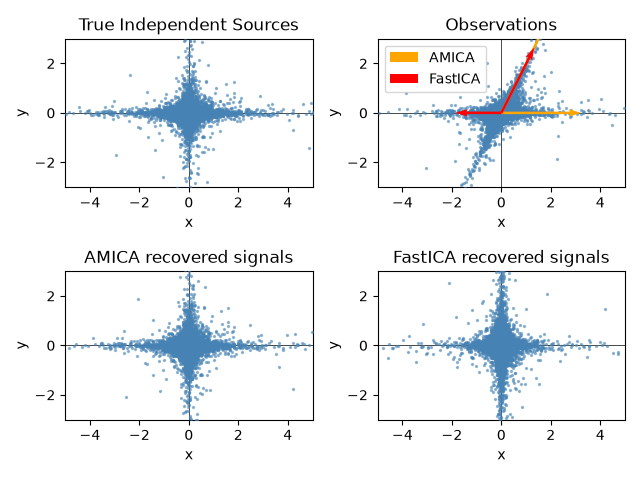

Note
Go to the end to download the full example code.
ICA on 2D point clouds¶
This example illustrates visually in the feature space a comparison by results using two different component analysis techniques.
Representing ICA in the feature space gives the view of ‘geometric ICA’: ICA is an algorithm that finds directions in the feature space corresponding to projections with high non-Gaussianity. These directions need not be orthogonal in the original feature space, but they are orthogonal in the whitened feature space, in which all directions correspond to the same variance.
PCA, on the other hand, finds orthogonal directions in the raw feature space that correspond to directions accounting for maximum variance.
Here we simulate independent sources using a highly non-Gaussian process, 2 student T with a low number of degrees of freedom (top left figure). We mix them to create observations (top right figure). In this raw observation space, directions identified by PCA are represented by orange vectors. We represent the signal in the PCA space, after whitening by the variance corresponding to the PCA vectors (lower left). Running ICA corresponds to finding a rotation in this space to identify the directions of largest non-Gaussianity (lower right).
Note
This example is adapted from the Scikit-Learn documentation.
Generate sample data¶
import numpy as np
from amica import AMICA
from sklearn.decomposition import FastICA
rng = np.random.RandomState(42)
S = rng.standard_t(1.5, size=(20000, 2))
S[:, 0] *= 2.0
# Mix data
A = np.array([[1, 1], [0, 2]]) # Mixing matrix
X = np.dot(S, A.T) # Generate observations
transformer = AMICA(random_state=42)
S_amica_ = transformer.fit(X).transform(X)
fastica = FastICA(random_state=rng, whiten="arbitrary-variance")
S_fastica_ = fastica.fit(X).transform(X) # Estimate the sources
Plot results¶
import matplotlib.pyplot as plt
def plot_samples(S, axis_list=None):
plt.scatter(
S[:, 0], S[:, 1], s=2, marker="o", zorder=10, color="steelblue", alpha=0.5
)
if axis_list is not None:
for axis, color, label in axis_list:
x_axis, y_axis = axis / axis.std()
plt.quiver(
(0, 0),
(0, 0),
x_axis,
y_axis,
zorder=11,
width=0.01,
scale=6,
color=color,
label=label,
)
plt.hlines(0, -5, 5, color="black", linewidth=0.5)
plt.vlines(0, -3, 3, color="black", linewidth=0.5)
plt.xlim(-5, 5)
plt.ylim(-3, 3)
plt.gca().set_aspect("equal")
plt.xlabel("x")
plt.ylabel("y")
plt.figure()
plt.subplot(2, 2, 1)
plot_samples(S / S.std())
plt.title("True Independent Sources")
axis_list = [(transformer.mixing_, "orange", "AMICA"), (fastica.mixing_, "red", "FastICA")]
plt.subplot(2, 2, 2)
plot_samples(X / np.std(X), axis_list=axis_list)
legend = plt.legend(loc="upper left")
legend.set_zorder(100)
plt.title("Observations")
plt.subplot(2, 2, 3)
plot_samples(S_amica_ / np.std(S_amica_))
plt.title("AMICA recovered signals")
plt.subplot(2, 2, 4)
plot_samples(S_fastica_ / np.std(S_fastica_))
plt.title("FastICA recovered signals")
plt.subplots_adjust(0.09, 0.04, 0.94, 0.94, 0.26, 0.36)
plt.tight_layout()
plt.show()

Total running time of the script: (0 minutes 16.235 seconds)